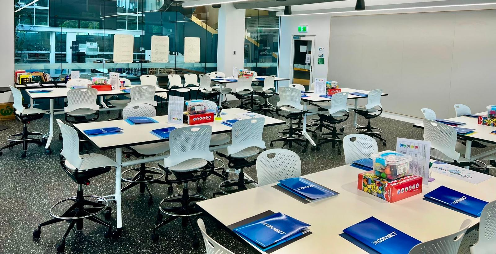

Connecting school students with university mentors and startup innovators — completely free.

The Future Founders Plan is a free initiative by JCU Founders-in-Residence designed to inspire the next generation of entrepreneurs. We partner with schools across the region to give students a unique opportunity to engage directly with university mentors, industry experts, and real-world startup founders.
Through a structured session held at the JCU Ideas Lab, your students will explore innovation thinking, learn what it takes to build a startup, and have open conversations with experienced mentors — all at no cost to your school.
Whether your students are curious about technology, business, sustainability, or social impact, our mentors are here to guide, inspire, and spark ideas that could shape their futures.
Ready to bring your school in? Fill out a quick application and we'll be in touch to schedule your session.